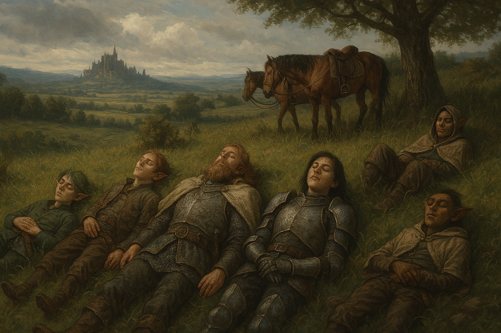

Chapter 3: Dangerous Roads
Hand of the Lich

Hand of the Lich
15050.11.20
離開了麥克嵩，冒險者們先測試了一下 Mr. Moon 的名片，確保騎在馬上，他們一樣能被轉移，接著他們便一路朝著大學城的方向前行。
入夜，附近沒有看見其他城鎮，冒險者們決定在路邊樹旁將馬停好，簡單紮營。大家簡單搜集木材打算搭起營火。Samael 在搭好的營火邊彈起琴，附近不少小動物都聚集了過來，但 Beau 似乎對此不太感興趣，跑到另一側的樹後坐下來休息。
不久後，Midori 要去找 Beau，卻發現他不見了。靠著定位術，Midori 發現 Beau 之前拿來裝私房錢的玩偶還在麥克嵩。他重新將定位術的目標換成 Beau 本人，發現 Beau 一直朝著樹林內走去，怎麼喚有沒有回應。大家一起朝著樹林內去尋找 Beau。
Midori 和 Siri 兩人跟隨著 Beau 緩慢行走的方向，朝著森林深處跑去。終於，Midori 看見 Beau 的身影。Beau 告訴他，前方不遠處有另一條道路，看起來比原本大家走的那條還要寬敞平坦，而且還有其他馬車也走這條路。同時，這條路和原本的路是平行的，應該也能到達原定的目的地：大學城。Siri 悄悄躲在接近新的路的邊緣，透過鏡子觀察經過的馬車，但是看不清楚。
三人走回大家紮營的位置，Beau 安全回來讓大家鬆了一口氣。輪班守夜時，Midori 和 Beau 好好地說了說話，要他配合團體行動，盡量不要獨自行動。這對已經在妖精荒野獨自生活大半人生的 Beau 來說並不容易，但他也承諾會努力調整自己。
輪到 YHWH 和 Ron 守夜時，他們發現了路邊有個從遠方走來的奇怪聲音，像是拖行的腳步聲。YHWH 試著朝那方向升起營火，想照亮那生物的模樣，卻只看見模糊的輪廓，而且那生物踏過營火，似乎完全沒有受到傷害。兩人保持警戒，深怕生物朝著大家攻擊。隨著生物接近，YHWH 判斷那應該是個泥人。他在拉松學院曾聽說過來自「深淵」的生物，泥人就是其中一種，但這隻比起來自深淵，更像是在這個時空被製作出來的。另外，他也發現這隻泥人的左手是斷的。兩人看著泥人漸漸走遠，地上似乎還有部分黏液的痕跡。YHWH 採集了一點黏液放到百寶袋中收藏，Ron 則發現黏液中似乎有東西在移動，像是某種生物一般。
15050.11.21
輪到 Samael 守夜時，他發現慢爆似乎對 Ron，或是 Ron 的手，有很大的興趣。雖然爬行速度極慢，但他持續不斷的朝著 Ron 的方向爬去。當慢爆爬到 Ron 手邊時，Siri 已經起床要一起守夜了。兩人發現 Ron 竟然將慢爆一把抓起，手直直舉高，像是掐著他一樣。Samael 和 Siri 緊張的試著把慢爆救下來，但 Samael 也發現慢爆似乎在 Ron 的手上睡得很安穩，放下來後，他還是朝著 Ron 的那隻手爬去。
天還沒亮，大家都休息夠了，起床吃了果實後，大家簡單討論了一下決定要走 Beau 昨晚發現的那條新的路，接著大家便牽著馬，小心翼翼地穿過樹林之間，來到新的道路。
三匹馬載著六名冒險者，大家繼續往南前進。到了中午時間，大家停下來暫時休息。除了 Ron 外，其他人都看見了筆直的道路右側似乎有座洞穴，而且慢爆對這洞穴有很大的興趣，不斷朝著那方向探去。同時，似乎有個東西在洞穴前面隨風飄著。Ron 發現後，快速地向前奔去，發現是一張寫得滿滿的羊皮紙。他拿了回來，和大家一起閱讀。
那一天我迷迷糊糊睡醒了。雖然視野有點模糊，但我馬上就發現房間怪怪的，至少我很肯定有什麼地方不對勁。
我試著爬起來，但是發現自己的手被拴住了，怎麼掙脫都掙脫不開。然後我聽見了細微的聲音。
奇怪，我明明自己睡一間，房門睡前都鎖好了，房間也沒有窗戶。昨晚也有讓嘟嘟睡在他客廳的小床上。但是房間內很肯定有別的東⻄。
我眨了眨眼，床邊至少有八個、九個，還是更多陌生人……他們全身穿黑色的披風，而且用面罩把臉都遮起來了，我覺得很可怕。他們一直靠近我，但是都不說話。我大聲叫爸爸媽媽來救我，但是沒有改變，我連嘟嘟的叫聲都沒聽到。
然後，站在離我最近的兩個人剝下了面具。
……是爸爸跟媽媽。
他們眼神冷漠，一副不認識我的樣子。 那個長著媽媽樣子的人朝著後面的人揮了揮手，他們從後面傳來一個看起來重重的東⻄，用布層層包著。
不會吧……這不是真的。
布上還沾有感覺顏色已經變深的……血。
不可能吧……為什麼……。
「索拉，」爸爸開口說話了，我忍不住開始哭。我很害怕，不知道這是什麼意思。「很抱歉必須讓你面對這一切，但是這是必須的。」
話音剛落，爸爸和媽媽把嘟嘟的屍體從布裡翻出來，兩個人從兩側抓住他的前後端，舉在我的臉前。
我感覺到有東⻄滴在我的臉上。
我只記得在我昏倒的前一刻我正在尖叫。
那時候我才10歲而已。
我再次醒來以後，我甚至不敢肯定那些事情是真的有發生過，還是只是我自己想像的。我應該要問爸爸媽媽的，但是我太害怕了。
《索拉日記》746 E.M. 04.22
沒有人聽過索拉這個名字，但內容讓人也難以得到什麼線索。這年份……看起來也和現在的紀元不同。大家討論著要不要進到洞穴內進行探索，但 Beau 在大家還沒下決定前就直直往前走去了。
大家牽著馬一起走入了洞穴內。洞穴兩側都有火把，幾名冒險者拿起火把照明。稍微深入一點後，背後卻傳來了轟隆隆的響聲，巨石掉落，封住了洞穴口。經過調查，這些巨石看起來十分人工，這個陷阱很顯然是刻意設計好的。
走回被封住的洞穴口時，Siri 發現了地上有個疑似陷阱的開口，按了一下，開口竟然崩塌了，有座小樓梯通往地底下，慢爆也不斷朝著這個開口嗅探。大家討論之後，決定先把馬匹綁在火把架上，並放置了一天份的糧草讓牠們食用。接著大家便依序走下了樓梯。
樓梯下的空間寬敞，而且傳來悠揚的音樂聲……似乎是某種琴聲。眼前是一座咖啡廳，門口是霧霧的玻璃門，裡面似乎有不少客人和服務生。眾人回頭，發現樓梯竟然不見了，也就只好硬著頭皮繼續走下去了。
YHWH 發現在這裡，魔法似乎失去了效用，他的法術無法施展。他拿出百寶袋，發現裡面竟然是空的，但同時他也能摸到布袋的底。
推開玻璃門，一名服務生走向大家，說了句歡迎光臨。在大家詢問下，服務生帶著大家走進了咖啡廳內。觀察周邊的客人，這些人竟給人一種不太對勁的感覺，他們的動作有如不斷重複，甚至像是被模板刻出了的樣子，有種這個空間是個模擬空間的奇異感。
咖啡廳內的空間奇大無比，走了好久，服務生終於停了下來，推開包廂的門。眾人望進去，足夠大的餐桌中間坐了個小男孩，他慢慢抬起頭，看向大家。
「你們終於來了，我等你們很久了。」小男孩說道。「請坐吧！我叫索拉。」
冒險者們雖然感到疑惑，但還是坐了下來。他們詢問著索拉為什麼知道他們會來？在等什麼？希望冒險們能幫他做什麼？但索拉似乎記不太清楚。索拉告訴他們，是他的家庭醫師 Vaxon 醫生告訴他冒險者們會來救他的預言。
包廂的門被拉開，一名服務生端來了咖啡，放在每個人的面前，索拉輕輕喝了一口。同時，從門外，一隻黃金獵犬飛奔而入，跳到了索拉的懷中。「這是我們家的狗，嘟嘟！」眾人聽到這個名字愣了一下，在剛才看見的日記中，嘟嘟似乎已經被殺死了才對啊。
在冒險者們的說服下，索拉帶著他們離開了咖啡廳，往他家走去。奇異的是，他們從原本咖啡廳的門走出，門外竟然不是原本的洞穴，而是一片農田。索拉帶著大家繞過咖啡廳後側，告訴他們走 10 分鐘左右，就能到他們家所在的小鎮，卡什拉鎮了。
大家一路嘗試從索拉口中問些什麼，但索拉似乎對大多數的事情記憶都模模糊糊，沒有太大的幫助。到了卡什拉，大家原本想先去見索拉口中的這名家庭醫師，但 YHWH 聽見了索拉提及書店，感到很有興趣，於是大家便先去拜訪書店。
這間沒有名字的書店，有個自稱 Moore 的店員。他如咖啡廳內的人一樣，生硬的歡迎著大家。YHWH 想找關於這個城鎮歷史的書，但卻發現，書櫃上放的全是人的傳記，而且是住過卡什拉的人的傳記。令人感到疑惑的是，索拉和 Vaxon 醫師的傳記找不到，但 YHWH 找到了來到這裡的冒險者們一人一本的傳記，只是封面上的名字還很淺，裡面的內容則是空的。
大家也感受到身體似乎有些不適，隨著時間，大家的體力似乎越來越差，反應越來越遲鈍。
索拉引導大家拿了他爸爸和他媽媽的傳記，大家得知他的父母名為 Pete Madison 和 Leslie Madison，原名 Leslie Grunfeld。
離開前，YHWH 問 Moore 能否將書買走，Moore 告訴他想拿走就拿走，和他說一聲即可，於是 YHWH 便將六本冒險者們的傳記帶走。
斜對角是醫生的診所。索拉推開門，迎面而來的是笑容滿面的櫃檯大哥哥 Witford。冒險者們和他說明想見 Vaxon 醫師，於是 Witford 便到診間和 Vaxon 醫師說了一聲。回頭和冒險者們告知時，他卻像當機了一般，說話結巴卡住，然後倒在地上，臉色發白。YHWH 趕緊跑到診間內，告訴醫生他的櫃檯人員倒地了，但醫生僅悠悠的說他沒事的。冒險者們也看見 Witford 緩緩站了起來，但人卻像是失了魂一樣。
冒險者們走入診間，但 Samael 發現索拉似乎感到十分害怕，於是他和 Ron 以及 YHWH 決定先到診所外陪著索拉以及嘟嘟，索拉也的確心情平穩了一些。
診間內，Midori、Siri 和 Beau 試著和醫生詢問關於索拉以及這裡的事，他們得知現在是 746 年 11 月 6 日，而醫生似乎對拉索斯教毫無概念。關於預言，醫生表示當時他是在小鎮的教堂內禱告時在聽見的。這個教堂隸屬於一個叫「匿名之聲」的宗教組織，領導者是索拉的外曾祖父，也就是 Leslie 的父親，但大家都稱他為 Father，並不清楚他的本名。Leslie 似乎不太信這個宗教。
醫生表示索拉從小就有間歇性昏厥的病況，且年紀越大越嚴重，婚覺得時常也更長，因此他的父母對此很擔心。他們嘗試過各種療法，在 Vaxon 醫師的說明下，很多比起醫學，更像儀式。其中 Vaxon 醫師便提到，當時將嘟嘟犧牲的決定便是他下的。冒險者們大感疑惑，雖然在日記中有獨到嘟嘟被殺死一事，但剛剛嘟嘟就在他們眼前，怎麼說也不太對勁。
離開前，他們發現 Vaxon 醫師一直在抓他的手。冒險者們詢問他的狀況，他僅表示最近有點過敏，然後將手刻意放到桌子下。在 Siri 小心的窺視和 Midori 毫不掩飾地觀察下，他們發現醫師的手看起來和 Ron 那隻被裝上去的手幾乎一模一樣。Midori 也透過自身的能力，發現這名 Vaxon 醫師似乎是個不死生物，也許是個巫妖也說不定。
感覺到了危險，三人決定先和醫生道別，準備前往索拉的家。
另一方面，YHWH 利用時間又跑回書店，翻了翻索拉父母的書，想了解索拉是怎麼死去的。他讀到，有一次索拉的父母為他執行儀式，利用匿名之聲的力量，召喚出了有史以來的第一隻拉茲特獸—始祖拉茲特獸，想洗滌索拉的靈魂，但索拉卻被吸乾靈魂而亡。索拉的父親無法接受兒子的死，每天與他的屍體相伴，最後無法照顧自己而死去，被埋在教堂的後花園。索拉的母親則不同，在兒子死去後，他開始拉攏匿名之聲的信徒，建立起了自己的教派，而他，也成了拉索斯夫人（the Lady of Laxthos）。而那隻始祖拉茲特獸，則被關在索拉家的閣樓。
冒險者們集合後，往索拉的家走去。在索拉家外，一名與索拉年紀相仿的小女孩迎面跑來，和索拉擁抱。索拉向大家介紹，他是 Valero Berners，他的女朋友，而且他們有個剛出生幾個月的孩子，叫 Tari。眾人對於一對年僅 10 歲的小情侶已經有了孩子，非常難以置信，同時對於再熟悉不過的 Berners 也感到不寒而慄。索拉表示 Valero 家就在他們家旁邊的小木屋，看起來非常小。
大家猶豫著要先去看看這名孩子，還是先去索拉家（也許能見到他的父母）感到猶豫不決，最終決定還是去索拉家優先，畢竟大家的身體狀況越來越不好，不知道剩下多少時間了。
一樓大門打開，裡面昏暗無比，索拉將燭台和火把點亮，大家只看見蓋滿整個房子的灰塵，但索拉似乎看見的不太一樣。索拉說明一樓是大廳，二樓是他的房間，三樓是他父母的房間。他說著走上華麗的樓梯，前方有兩幅畫像，一幅是他和他的父母，另一幅則是他和 Valero。索拉盯著兩幅畫，似乎有點恍神，突然他好像領悟到了什麼一般，化為粉末消失不見。大家看了都驚呆了，YHWH 一看，嘟嘟也不見了。
大家覺得事不宜遲，趕緊上樓去。在索拉的房間內，大家看見鋪張的床鋪下鼓鼓的，有兩具屍體，是索拉和嘟嘟。大家決定先上閣樓，要離開這裡，似乎得面對始祖拉茲特獸才能達成。
然而，閣樓關押著始祖拉茲特獸的門似乎被鎖得緊緊的，無法打開。大家決定還是先回三樓去。雖然害怕這名似乎是拉索斯教創始者的 Leslie 就在裡面，但有幾名冒險者已經狀況差到走不動了，大家還是只好硬著頭皮打開門。大床上一樣有具屍體，屬於 Pete，他的身邊則放了一張紙，上面有著潦草的文字。Midori 拿起閱讀，上面寫著：這個世界是假的，只要跳出閣樓的窗戶，就能回到原本的世界。他說的話讓其他人感到不對勁，於是其他人搶過紙來看，發現讀到的內容不同：這個世界是假的，需要對始祖拉茲特獸進行驅離魔法，然後跳出閣樓的窗戶，才能回到原本的世界。此時，Siri、Samael 和 Beau 的腦中浮現出了驅離魔法的使用方法。Beau 背著已經走不動的 Siri，和 Samael 三人衝到閣樓。此時閣樓關押始祖拉茲特獸的門鎖不見了。大家做好準備，便將門拉開。
那是 Samael 此生見過最美的生物，柔順的毛皮，緊緻又有彈性的肌膚，比自己養的慢爆還要美……
眼看 Samael 陷入始祖拉茲特獸的魅惑，Siri 將他推開，趕緊使出腦中習得的驅離魔法，一瞬間，房間空空的，和 Samael 的心一樣。始祖拉茲特獸消失了。
三人趕回三樓，大家一起回到閣樓準備跳出窗戶，只留下狀況還可以的 Midori、Ron 和 Beau 在這裡繼續勘查。Siri、Samael 和 YHWH 則一躍而出，在落地前消失了。
剩下的三人決定去看看索拉和 Valero 的孩子。破舊的小木屋內，傳來大聲的嬰兒哭啼聲。推開門，一對年邁的夫妻，正照顧著一名嬰兒。他們是 Valero 的父母，Wyatt 和 Lucy Berners。Valero 似乎沒有回家。經過詢問後，他們得知 Berners 家的確是為索拉家工作，而且對於 Leslie 和 Pete 非常感激，願意為他們做任何事情。但因為孩子們年紀還小就生下小孩，嬰兒 Tari 就以 Berners 為姓氏，而不是 Madison。
Ron 對於那名和他有一樣手臂的 Vaxon 醫師有些好奇，但 Midori 發現自己的身體狀況快要不行了，於是三人趕緊回到閣樓的窗戶，跳了下去。
睜開眼，YHWH 和 Samael 發現自己在一片草地上，四周空曠，只有一小片樹林，Siri 在他們身旁，但似乎沒有醒來。兩人疑惑著這是什麼地方，只知道這裡肯定不是當時進入的洞穴內。
YHWH 透過項鍊詢問了 Domneil，得知走入洞穴似乎是半年前的事情了。這中間他們的身體自動的旅行好一段路。
Siri 醒來後聽見了馬叫聲，發現他們的兩匹馬竟然綁在附近的樹林。馬匹似乎也吃得好好的，沒有餓著。
三人靜靜等著，不久後，他們看見從身後 Midori、Ron 和 Beau 無神地朝著他們走來，停住，然後躺了下來，最後醒來了。
而在草原的另一端，YHWH 看見他曾造訪過的知識的最高殿堂，大學城，就在眼前。